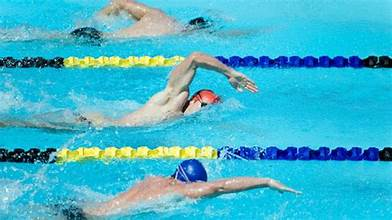
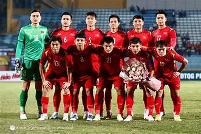
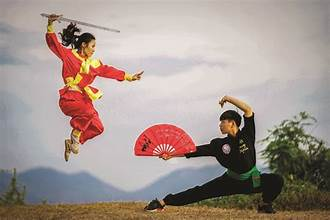

Trường THPT Hoàng Hoa Thám có bề dày thành tích về học tập và các hoạt động thể thao,văn nghê của thành phố
Các câu lạc bộ ngoại khoá hoạt động sôi nổi và luôn được nhà trường tạo điều kiện để sinh hoạt
Những năm qua, trường đạt nhiều thành tích các cuộc thi cấp thành phố, quận:
CÂU LẠC BỘ BƠI LỘI
Câu lạc bộ Bơi lội là nơi dành cho những bạn yêu nước… theo đúng nghĩa! Đây là môi trường rèn luyện thể lực toàn diện, giúp các thành viên tăng sức bền, cải thiện kỹ thuật bơi và nâng cao khả năng ứng phó trong môi trường nước. Với đội ngũ hướng dẫn tận tâm và các buổi tập thường xuyên, CLB giúp bạn vừa thư giãn, vừa rèn luyện sức khỏe hiệu quả.

CÂU LẠC BỘ BÓNG CHUYỀN
CLB Bóng chuyền là sân chơi năng động dành cho những bạn yêu thích tinh thần đồng đội và sự phối hợp nhịp nhàng. Tại đây, các thành viên được luyện tập kỹ thuật chuyền – đập – chắn bóng, phát triển tốc độ và phản xạ. CLB thường xuyên tổ chức giao lưu và thi đấu nội bộ, tạo cơ hội để bạn thể hiện bản lĩnh trên sân.
CÂU LẠC BỘ BÓNG ĐÁ
CLB Bóng đá mang đến môi trường rèn luyện chuyên nghiệp cho những ai đam mê trái bóng tròn. Tham gia CLB, bạn sẽ được rèn kỹ thuật cá nhân, chiến thuật thi đấu và thể lực. Đồng thời, các hoạt động giao hữu giúp tinh thần đồng đội và sự gắn kết giữa các thành viên ngày càng mạnh mẽ. Đây là nơi để bạn cháy hết mình trong từng trận đấu.


CÂU LẠC BỘ VÕ THUẬT
CLB Võ thuật là điểm đến cho những bạn mong muốn rèn luyện sức mạnh, sự nhanh nhẹn và khả năng tự vệ. Tại đây, bạn sẽ được tiếp cận các kỹ thuật nền tảng, nâng cao và luyện tập tính kỷ luật, sự tập trung. CLB không chỉ giúp cải thiện thể chất mà còn xây dựng tinh thần kiên cường, tự tin và bản lĩnh trong cuộc sống.
